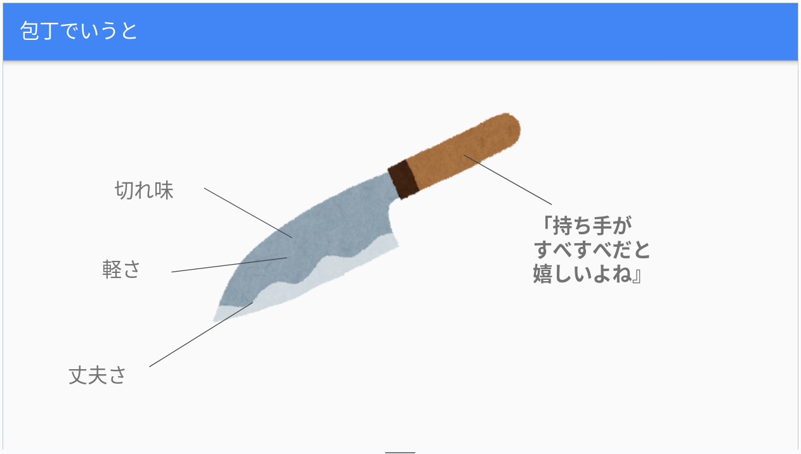
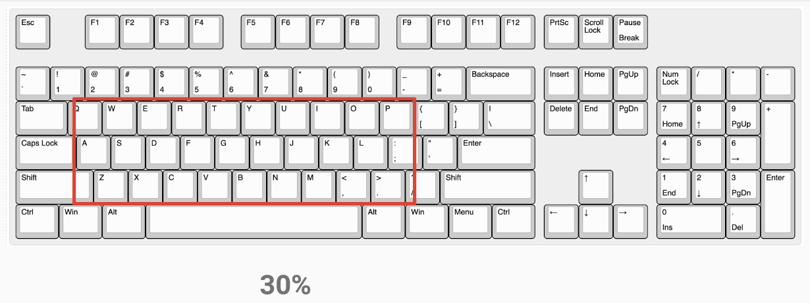

「ミリしら」で KeebWorld Conference 2024 へ行ってみた

「ミリしら」で KeebWorld Conference 2024 へ行ってみた
最初に予防線を張っておくと，私は自作キーボードとか全く知らないのよ。 そりゃ，そういうことをする人たちがいるのは知ってるよ。 でも，それだけ。 でもまぁ，せっかく松江でやるってのなら見てみたいし，そもそも技術系のオフラインイベントが「コロナ」以降では初参加なので1，リハビリにはなるかなぁと（笑）
毎年松江市内で RubyWorld Conference が開かれるが，今年はその流れでカンファレンスの翌日の今日に開催された。
さっそく松江駅前のオープンソースラボまで出かける。 自転車はオーバーホールに出してるので公共交通機関で。
いや，なんか，なんかワクチンがどうたらとか叫ぶカルト集団？ がビルの前に居たので，大回りの遠巻きにしながら入っていった。 マジ迷惑。 病院前も迷惑だろうし，休日にやるならお役所前でやってくれ。
開始10分前に入ったのだが，既にほぼ満席状態だった。 RubyWorld Conference からの流れとはいえ，結構ビックリした。
最初に述べたように自作キーボードに関しては本当に「ミリしら」状態なので，ただ聴きに来ただけという感じになってしまった。 発表に対して何を質問していいのかすら分からん（笑）
例えば，なんで RubyWorld Conference の流れでこれを開催するのか，今回の一連の発表でようやく分かった。 どうやら Ruby 製の picoruby/prk_firmware というファームウェア環境があって，それを使って自作キーボードをカスタマイズするってのが Ruby コミュニティ内で随分前から流行ってるらしい。 そういう基本的なことも知らないレベルな私である2。
以下は覚え書で（全ての発表を網羅しているわけではないのはご容赦）：
Have fun why not by 原悠 (@yhara)
自作キーボードについてのガイダンス的な発表。 助かる。 60%とか40%とか30%とかいうキーボードの分類の仕方を初めて知った（たとえば有名な HHKB は60%）。 特に面白かったのは，キーボードの話にはあまり関係ないが

プログラミング言語を包丁に喩えて，普通は切れ味や軽さや丈夫さといった点で評価するが Ruby は「持ち手がすべすべだと嬉しいよね」的な評価になりがちってのがめがっさウケた。
考えてみれば Go 言語も（Ruby とはある意味真逆なのに）似たようなもんだと思ったり。
キーボードからロボットへ by Akihiro Kurotani (@kurod1492)
次に紹介する発表に絡むが，ファームウェアのカスタマイズ（書き換え）が容易という話は興味深かった。
自作キーボードと関係ないが，来年 2024-01-12 に松江テルサで「Matz葉がにロボコン」ってのが開催されるらしい。 でも関係者以外の見学は無理そう？
“Actual” Security in Microcontroller Ruby!? by sylph01 (@s01)
自作キーボードの制御に使われている Raspberry Pi Pico および Raspberry Pi Pico 2 では WiFi 接続ができるそうな。 しかもファームウェアである picoruby/prk_firmware も WiFi 制御に対応してるんだと。 さらに Raspberry Pi Pico 2 のほうは SRAM がほぼ倍（520MB）になったそうで，単純な制御ではなくもっと色々なことができるようになったわけだ。 さらにさらに前節にあるようにファームウェアの書き換えは容易という話（スクリプトキディには無理かもしれないが）。
これで何が起きるかというと，自作キーボード経由で不正アクセスがしやすくなるということだ。 これを防ぐのが Secure Boot や Encryptd Boot らしい。
まぁ，キーボードを PC (Programmable Controller) として構成すれば当然そうなるよな。 面白い！
わたしのキーボード by まつもとゆきひろ (@yukihiro_matz)
スライドの公開はないのかな。 うろ覚えですまん。
欲しいキーボードのスペックは決まってるけど，完成品でも自作（金に飽せて作ってもらったらしい）でも満足するものがなくて，キーボードを買いまくってる話が面白かった。 カンファレンスのあと（私は参加してないが）使わなくなったキーボードを放出したそうな。
キーレイアウトは日本語キーボードが欲しいんだけどマッピングは US 配列がいいらしい。 理由は US キーボードはキーの数が少ないから。
さらにファンクションキーは独立したものが欲しいらしい。 これに関しては同意する。 ファンクションキーは結構使うし，コンビネーション・キーと組み合わせたキーアサインは少ないほうがいいと私も思う。
30%キーボード発想法 by みなも♨️30% (@X___MOON___X)
これもスライドの公開はないのかな。 うろ覚えですまん。
最初に紹介した発表から引用するが，30%キーボードってのは概ね以下のようなキーで構成されているキーボードらしい。

たとえば60%だとキーの配列の自由度がなくなって，どれも似たようなレイアウトになるらしい。 せいぜい分割にするとかかな。 キーの数を極端に減らすことでタイプライタ由来のレイアウトの軛から外れ自由な設計ができる，という話が興味深かった。
感想
カンファレンスでは自作キーボードも色々展示されていたが，あまり見てない。
やっぱ分割は基本なんだな。 まぁ分割しないでファームウェアのカスタマイズも要らないならメーカーから完成品を買えばいいだろうし。
私は若い頃にガチの VT 端末で「現地調整」させられてたことがあって US キー配列でも日本語キー配列でもどっちでもいけるのよ。 でも60%キーボードは当時のトラウマがフラッシュバックするので使いたくない（あと vi/vim もトラウマがフラッシュバックするw）。 それに「わたしのキーボード」でも言及されていたが，コンビネーション・キーと組み合わせたキーアサインは少ないほうがいい。 そもそもメカニカルキーボード自体を使い出したのがごく最近なんだよな。
あと手先が不器用なのでハンダ付けとかも駄目。 私の場合，パーツ数の少ないガンプラを組み立てるくらいが限界である。 母親は手先が器用でハンダ付けも得意なのに，その辺は遺伝してくれなかったようだ（不器用さは親父似）。 もしやるなら金に飽せて得意な人にやってもらうって感じになるだろうか。
まぁ，しばらくはキーボードには手を出すまいと思った。 ファームウェアをいじるのは面白そうだし「キーボードガチ勢でもないのに全部他人の仕事でごそごそやっていたら新聞に載ってしまった件 (by 東裕人)」で紹介されているような特殊用途のキーボードとかなら興味あるけど3。
広島にいた頃から Ruby 案件には恵まれてなくて，仕事で全く使ったことがない。 仕事以外では C/C++ か Java か Go で，今は Go 一辺倒なので，松江地元にいてこれでいいのか？ という気はチョットしている。 一方で，歳とってから Ruby かぁ，という気もしないではないが。
あと Ruby コミュニティでは SNS は 𝕏 が主流なのかね。 Bluesky とかで見かけない感じ？ まぁ，今回のカンファレンスは Bluesky の TL で知ったんだけど。
日本語圏のエンジニアは Bluesky であまり見かけない印象を受ける。 真面目に探してないせいかも知れないが。 Mastodon は他サーバのユーザは探しにくいので動向が分からない。
今回はタイムテーブルをちゃんと見てなくて「日没までには帰ろう」とか呑気に考えてたら17時半過ぎまでみっちりだった。 逢魔時のバス停で帰りのバスを待っていたら号外が配られているのに気づく。
おー。 いよいよか。 新聞記者さんに捕まってインタビューを求められたが断った。 私は数年前から政治的無関心を装う（特に政治的なポジショントークはしない）ことを年間目標にしてるので（ときどき胡乱なことを口走るのはご容赦），応えないほうがいいだろう（笑）
ブックマーク
参考

- エレコム メカニカルキーボード Leggero 有線 テンキーレス Nキーロールオーバー対応 5000万回高耐久スイッチ採用 赤軸 グレー TK-MC30UKLGY/EC
- エレコム (Release 2023-10-25)
- Personal Computers
- B0CJT7S6D6 (ASIN), 4549550275798 (EAN)
- 評価
赤軸（リニア）で押下圧50g，ストローク4.0mm。個人的にはちょうどいい感じ。打鍵音が煩いがメカニカルだとこんなもんらしい。押下圧45gで静音タイプもあるらしいが10K円超える。有線だがキーボード直結ではなく USB-C ケーブルで接続できる（USB-C⇔USB-A ケーブル付属）。
-
技術系以外のイベントならある。「島根の歴史文化講座 2024」とか。これも今年に入ってからだけどさ。 ↩︎
-
確か TinyGo でキーボードのファームウェアを組むみたいな話も聞いたことがあるが，この辺の情報も全く知らない。いやぁ，組込み制御ソフトウェアに全くタッチしなくなって長いからなぁ… ↩︎
-
特定用途というなら FPS (First-Person Shooter) とかでキーボード入力する人なら30%キーボードはむしろ需要があるかも？ ハードウェア要件が厳しいかもだけど。そういえば
ShiftやCtrlといったコンビネーション・キーをフットペダルにアサインした製品を見かけたことがあるな。 ↩︎